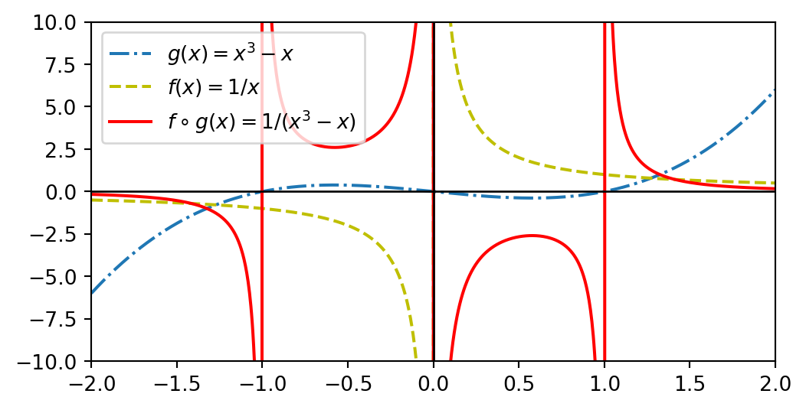

flowchart LR X((X)) --> |"g(x)"| Z((Z)) Z -->|"f(z)"| Y((Y)) X -->|"f(g(x))"| Y
Murthadza Aznam
January 16, 2023
Katalah wujud dua fungsi \(f(x): x \rightarrow y_x\) dan \(g(x): x \rightarrow z_x\), maka fungsi tergubah \(f\circ g(x)\) ialah \[ f\circ g (x) \equiv f(g(x)): g(x) \rightarrow y_{g(x)}. \] Hal ini bersamaan dengan mula-mula melaksanakan fungsi \(g(x)\) dan menggunakan hasil \(g(x)\) sebagai input untuk fungsi \(f(x)\) seperti yang digambarkan dalam rajah 1. Domain bagi \(f\circ g\) ialah apa sahaja domain \(g(x)\) yang menghasilkan input yang berada dalam domain \(f(x)\).
flowchart LR X((X)) --> |"g(x)"| Z((Z)) Z -->|"f(z)"| Y((Y)) X -->|"f(g(x))"| Y
Contoh 1 Katakan \(f(x) = \frac{1}{x}\) dan \(g(x) = x^3 - x\) maka, \[ \begin{align} f\circ g (x) = f(g(x)) &= \frac{1}{(g(x))}\\ &= \frac{1}{x^3-x}. \end{align} \]
Walaupun domain bagi \(g(x) = x^3-x\) pula ialah \((-\infty, \infty)\) dengan julat \((-\infty, \infty)\), memandangkan \(g(x) = 0\) pada \(x=\{-1,0,1\}\) maka domain bagi \(f\circ g(x) = \frac{1}{x^3-x}\) ialah \(x \neq \{-1,0,1\}\) kerana \(\frac{1}{0}\) tidak tertakrif.

Katalah yang diketahui ialah \(g(x)\) dan \(f\circ g (x)\) dan kita ingin memperoleh fungsi asal \(f(x)\). Kita boleh lakukan sedemikian dengan menggunakan songsangan fungsi \(g(x)\) iaitu \(g^{-1}(x)\), \[ f(x) = f\circ g \circ g^{-1} (x). \]
Katakan pula yang diketahui ialah \(g(x)\) dan \(g\circ f(x)\) dan kita ingin memperoleh fungsi asal \(f(x)\). Sama juga, kita gunakan fungsi songsangan, \(g^{-1}(x)\), tetapi kali ini kita letakkannya di sebelah kiri. \[ f(x) = g^{-1}\circ g \circ f (x). \]
Contoh 2 Diberi \(g(x)=x^2+3\) dan \(f\circ g(x)=x^2\) maka \(f(x)\) ialah, \[ f (x) = f\circ g \circ g^{-1} (x). \tag{1}\] Mula-mula kita cari songsangan \(g(x)\), \(g^{-1}(x) = \sqrt{x-3}\) lalu kita ganti masuk dalam pers. 1, \[ \begin{align} f (x) &= (\sqrt{x-3})^2\\ &= x - 3. \end{align} \]
Proof (Semakan). Jika benar \(f(x)=x-3\), maka \(f\circ g (x)\) akan hasilkan semula \(f\circ g(x)=x^2\), \[ \begin{align} f \circ g (x) &= g(x) - 3\\ &= (x^2 + 3) - 3\\ &= x^2. \end{align} \]
Kita peroleh hasil yang sama maka benarlah pers. 1 seperti yang dinyatakan.
Contoh 3 Diberi \(g(x)=x^2+3\) dan \(g\circ f(x)=x^{2/3}+3\) maka \(f(x)\) ialah, \[ f (x) = g^{-1}\circ g\circ f (x). \tag{2}\] Mula-mula kita cari songsangan \(g(x)\), \(g^{-1}(x) = \sqrt{x-3}\) lalu kita ganti masuk dalam pers. 2, \[ \begin{align} f (x) &= \sqrt{(x^{2/3}+3)-3}\\ &= \sqrt[3]{x}. \end{align} \]
Proof (Semakan). Jika benar \(f(x)=\sqrt[3]{x}\), maka \(g\circ f (x)\) akan hasilkan semula \(g\circ f(x)=x^{2/3}+3\), \[ \begin{align} g\circ f (x) &= (f(x))^2 + 3\\ &= (\sqrt[3]{x})^2 + 3\\ &= x^{2/3}+3. \end{align} \]
Kita peroleh hasil yang sama maka benarlah pers. 2 seperti yang dinyatakan.